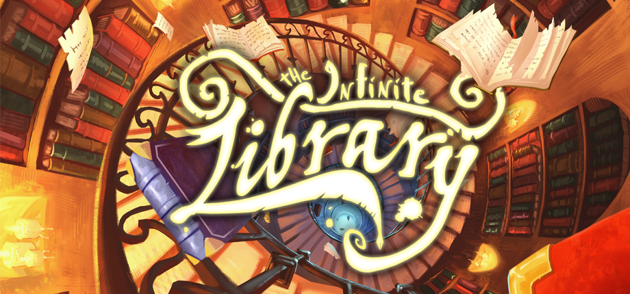
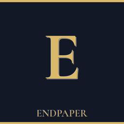
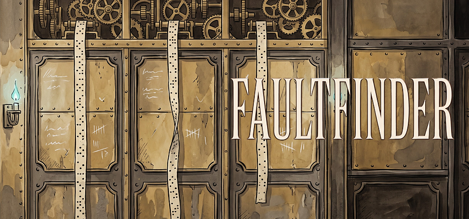
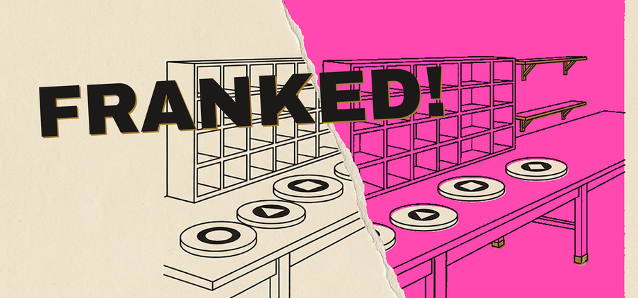
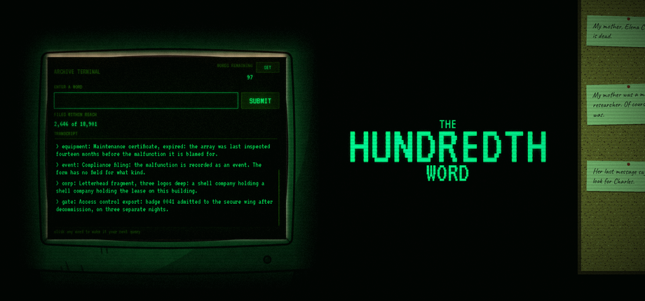

Small, strange, finished games. One person, Somerset, UK.
Endpaper is a one-person studio making small games that are built to end. No live service, no microtransactions, nothing that needs you back every day. You play them, they end, you keep the shelf. Each game below has a press kit with trailers, screenshots, key art and b-roll, all free to use for coverage.


Q4 2026 · Free demo on Steam and in the browser · Steam Next Fest, 19–26 Oct
A deduction game about debugging a program you can't run. The engineer who kept the city aloft is dead and her program is still running. Step through it, set breakpoints, and name the line that killed her.


In development
A murder mystery you solve one word at a time, and you only get a hundred of them.
Steam page and press kit to follow
Endpaper is one person, working from Somerset in the South West of England, building the kind of games I always wanted to find: ones that end, ones that mean something, ones where the systems are the story. Everything is built in Godot. Key art for The Infinite Library was painted by Komarca Art; some in-game artwork and music are made with generative AI tools, and each store page says so.